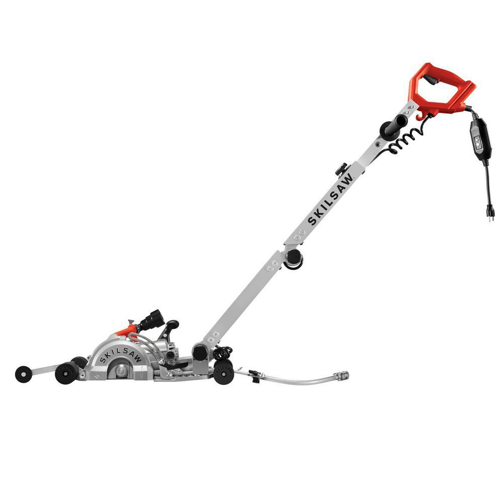

|
Chervon North America / Fall 2018
Teammate:
Ryan Kern
Skills:
Product Testing
Troubleshooting
During my time at Chervon North America, I worked on testing to improve
the safety and durability of one of the SKILSAW concrete saw components. While I can't go into
much detail of the project due to an NDA, this involved a lot of troubleshooting to
make sure the testing setup ran smoothly and that we could benchmark the old version
to compare any potential improvements to.
|
 |